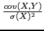
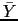
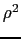
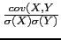
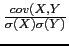

suivant: Graphe de la régression
monter: Les fonctions statistiques à
précédent: Interpolation linéaire : linear_interpolate
Table des matières
Index
Régression linéaire : linear_regression
Pour approcher les données par la droite des moindres carrés ayant pour
équation y = mx + b, on utilise linear_regression qui renvoie le couple
(m, b).
Si les données sont xi, yi avec i = 1..n, on a :
m = 
et
b =  - m
car la somme des carrés des distances
di = | yi - mxi - bi| est
minimale pour ces valeurs et ce minimum (qui est donc l'erreur quadratique
moyenne verticale) vaut
(1 - ) (Y)2 où r est
le coefficient de corrélation (
(Y)2 où r est
le coefficient de corrélation (
 = ).
= ).
linear_regression a les mêmes arguments que covariance.
On tape :
linear_regression([[0,0],[1,1],[2,4],[3,9],[4,16]])
Ou on tape :
linear_regression([0,1,2,3,4],[0,1,4,9,16])
On obtient :
4,-2
c'est donc la fonction linéaire d'équation y = 4x - 2
qui approche au mieux les données.
On tape :
X:=[0,1,2,3,4,5,6,7,8,9,10]
Y:=[7.3,9.53,12.47,16.3,21.24,27.73,36.22,
47.31,61.78,80.68,105]
Z:=log(Y)
linear_regression(X,Z)
On obtient :
0.266729219953,1.98904252589
c'est donc la fonction linéaire d'équation
z = ln(y) = 0.267x + 1.99
qui approche au mieux les données.
suivant: Graphe de la régression
monter: Les fonctions statistiques à
précédent: Interpolation linéaire : linear_interpolate
Table des matières
Index
Documentation de giac écrite par Renée De Graeve